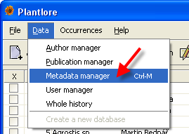
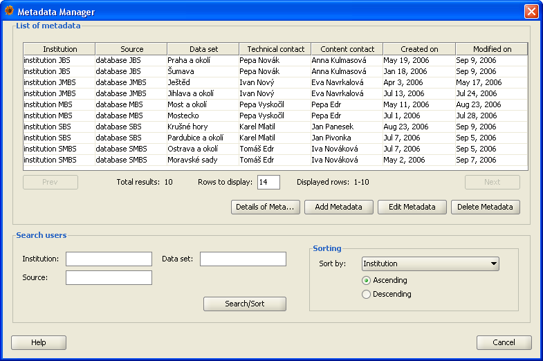
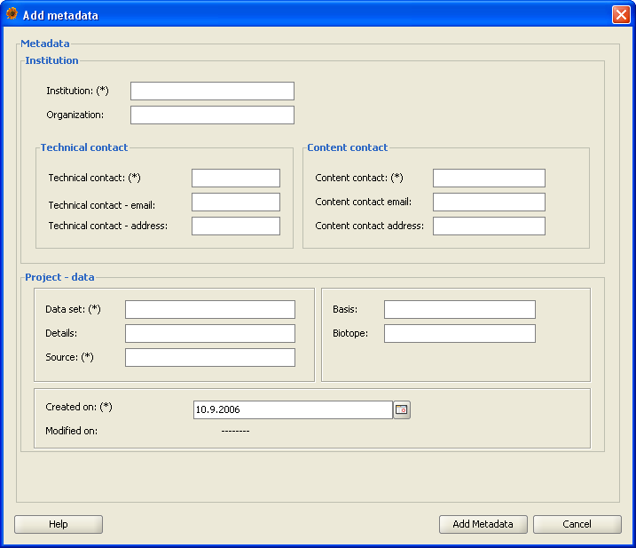
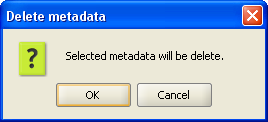

Metadata management

Metadata manager allows the administrator to add, edit, and delete the metadata of individual projects.
You can open the metadata manager from menu Data/Metadata management or by keyboard shortcut CTRL + M.
Metadata manager dialog

The metadata management dialog is divided into two parts:
- List of project metadata - displays the list of metadata of existing projects based on criteria entered for searching and sorting
- Search - requirements for searching and sorting of metadata
List of metadata
This part displays the list of metadata found after a successful search. You can set the number of projects displayed in the table
yourselves by changing the value of Lines displayed and confirming the new value by the ENTER key. Use Previous and Next buttons
to switch over to the previous or next list of metadata. Information about the currently displayed list of project metadata is stated in the
part below the table.
The following buttons enable the work with a record:
Search
Metadata manager
User manager offers the administrator the option to search using the following three parameters: institution, project name, and data source.
The results may be sorted by the institution name, project name, data source, name of the person responsible for technical assistance, name of the person
responsible for content assistance, date of the project creation and date of the most recent project modification.
If no parameters and limitations are entered, all project metadata will be found.
Note: the search is case sensitive.
a (case sensitive).
Adding project metadata
Add metadata dialog

Open the Add metadata dialog from Metadata manager. The window displayed offers the following items:
- Institution - unequivocal identifier of the institution that owns the original data source.
This item is obligatory and you will not be able to add metadata without filling it in.
- Organization - abbreviation of the organization.
- Technical assistance - name of the person responsible for the technical part of the project. This item is obligatory.
- Technical assistance - e-mail - contact e-mail of the person responsible for the technical part of the project.
- Technical assistance - address - contact address of the person responsible for the technical part of the project.
- Content assistance - name of the person responsible for the content part of the project. This item is obligatory.
- Content assistance - e-mail - contact e-mail of the person responsible for the content part of the project.
- Content assistance - address - contact address of the person responsible for the content part of the project.
- Project name - short name of the project. Project name is an obligatory item and must be unequivocal in the database.
- Project details - detailed description of the project.
- Source - name or code of the data source. This item is obligatory.
- Basis - information about what the given records describe (preserved specimen, ...).
- Biotope - information about the biotope
- Date of project creation - date and time of project creation. This item is obligatory.
- Date of most recent project modification - date and time of the most recent modification, entering, or deletion of records in the project.
Editing metadata
Open the Edit metadata dialog from Metadata manager. Don’t forget that you must select a project the metadata of which you aim to edit in order to open this dialog.
The layout of the Edit metadata dialog is almost identical with the Add metadata dialog. The obligatory items are: institution, name of the person responsible for
technical assistance, name of the person responsible for content assistance, name of the project, and data source.
Non-editable items:
- Date of project creation - date and time of project creation.
Non-editable item.
- Date of most recent project modification - date and time of the
most recent modification, entering, or deletion of records in the project.
Non-editable item.
The administrator may find the information about the changes performed in individual pieces of metadata in the whole history
dialog, where he may also utilize the option of reverting into previous values.
Detailed project metadata
This dialog displays detailed information about the project metadata. You have to select a project in order to be able to open this dialog.
The dialog is almost identical with the Edit metadata dialog. All items are non-editable, their nature is purely informative.
Removing project metadata
Use button Delete metadata in the Metadata manager to delete the metadata of a particular project. Before pressing this
button, it is necessary to select the metadata. After the button is pressed, the user will be informed about the
operation about to be performed. By confirming the operation, the metadata will be deleted.

The administrator may recover the deleted metadata by means of the whole history dialog.